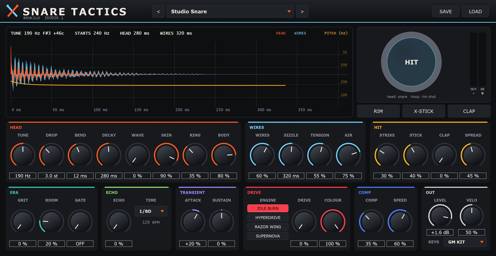
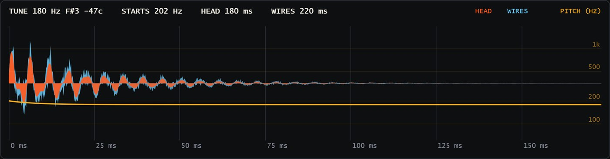
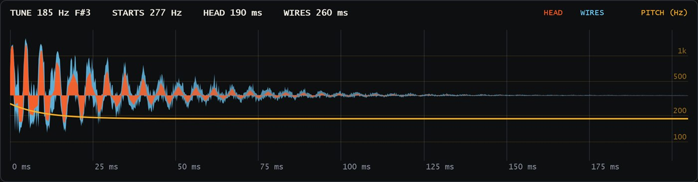
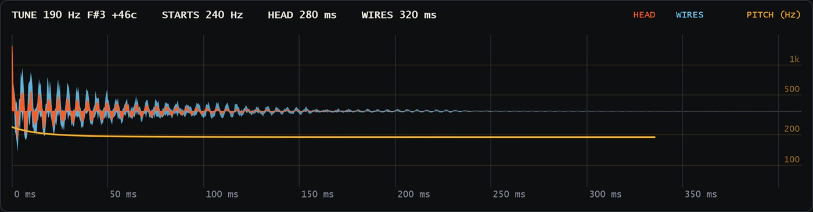
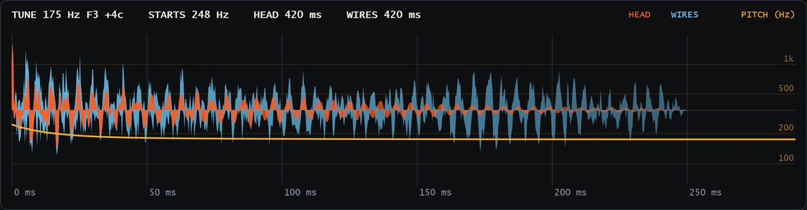
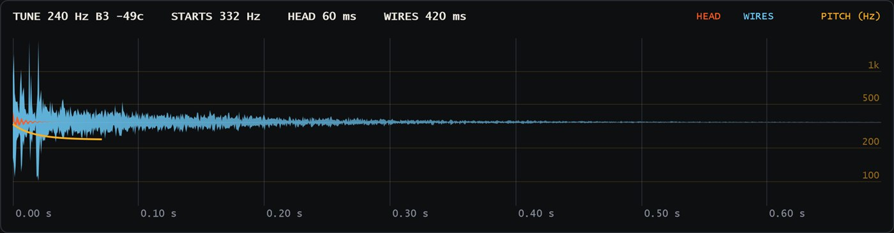
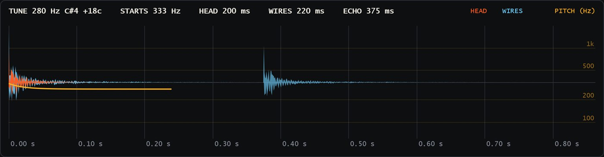
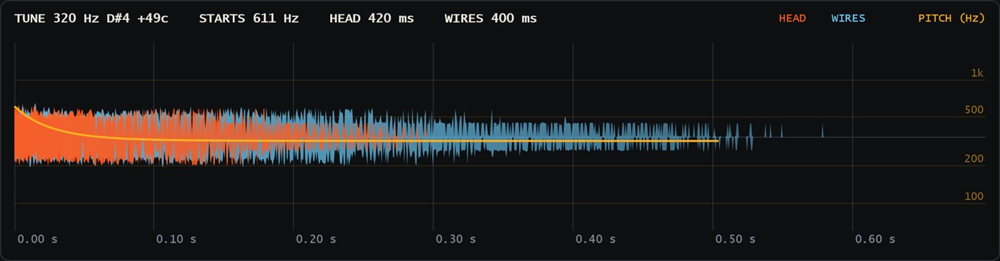
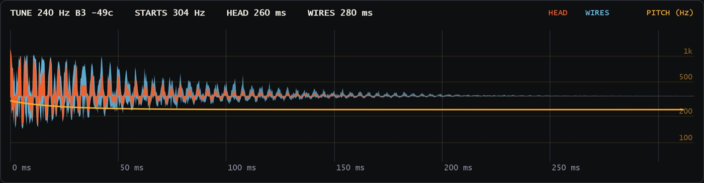

Brokild · Windows VST3 · Snare drum synthesiser
A head, a set of wires and a stick. Every snare there is, from those three. No samples.
MANUAL · BUILD 260926.1

Contents
Snare Tactics synthesises snare drums: the studio snare, the drum machines that made the records, and what techno, dub, industrial and digital hardcore did with them next.
It does not carry a simulation per machine. It models what every snare is — a head, wires and a stick, coupled — with thirty-one controls, and lets you walk from one drum to the next.
Open it and click the HIT pad — then the chrome hoop around it for a rim shot. Press > beside the preset name until something makes you grin.
Quick start
Copy Snare Tactics.vst3 into C:\Program Files\Common Files\VST3\ and rescan. It files under Instrument / Drum. The standalone, Snare Tactics.exe, needs no installing.
Click the HIT pad — the centre is the hardest hit — or its hoop for a rim shot. Keys: space snare, R rim shot, X cross-stick, C clap.
< and > step through the banks; the name opens the list. Presets are level-matched, so you compare drums, not volumes.
With KEYS on GM KIT (the default), note 38 is the snare, 40 a rim shot, 37 a cross-stick and 39 the clap — the General MIDI drum map, so a drum rack just works.
SAVE and LOAD use Documents\Brokild patches\Snare Tactics.
The idea
A snare is a head, a set of wires and a stick — and they are not independent. The wires are driven by the head. That coupling is most of what makes a real snare sound real.
| What | 808 / 909 | Studio snare | Snare Tactics |
|---|---|---|---|
| The head | two oscillators, 1 : 1.8 | a membrane’s modes | SKIN walks between them |
| Where it is hit | — | centre, edge, rim | STRIKE picks the modes |
| The wires | filtered noise | driven by the head | lag, buzz and ring along |
| Wire tension | — | loose to tight | TENSION |
| The stick | — | click, rim, cross-stick | STICK, STRIKE, articulations |
| Hands | the clap | — | CLAP and SPREAD |
A drum machine’s noise ignores the head. Real wires start a fraction of a millisecond after the stick, slap against the head once a cycle when they are loose, and keep sizzling for as long as the head rings. Snare Tactics does all three — which is why a loose snare here buzzes at the drum’s own pitch.



Head
The head’s settled pitch. The display names the note, so the snare can sit in the key of the song.
How far above TUNE the hit starts. A few semitones is a real head being hit hard; a lot is a zap.
How fast the pitch falls back. Short is a snap; long, with a big DROP, is the Simmons sweep.
Time for the head to fall 60 dB. The wires have their own.
The wave of the electronic pair: sine (808), triangle (909, at 50 %), rounded square. The membrane is always sines.
At 0, the drum-machine body: two oscillators near 1 : 1.83. At 100, a real membrane — ten modes at the Bessel ratios, and a pitch that starts sharp when hit hard and then settles.
How undamped the head is. Low is gel and tape: the overtones die at once. High leaves the famous snare ring wide open.
How much of the head you hear. All the way down for a clap or the wires on their own.
Wires
The steel coils under the bottom head — the snare in the snare drum.
Their level. The 808 called this SNAPPY.
Time for the wires to fall 60 dB. It also sets how long a clap hangs.
The one that makes it a real snare. Loose wires are dark, start late, slap against the head once a cycle — a buzz at the drum’s own pitch — and keep ringing along with the head. Tight wires are bright, short and crisp.
The top end of the wires and of the clap.
From loose to tight the wires’ brightness (spectral centroid) rises from 3.7 kHz to 7.8 kHz. Loose, their noise is chopped at the head’s pitch 45 dB more than tight; they arrive 3.2 ms later; and with a long-ringing head they are still sizzling when tight wires have long gone.
Play softly and the balance tips toward the wires, the way it does on a real drum: a ghost note is mostly snare, not head. With VELO up that is 7 dB of difference in the mix between a ghost and a full hit.

Hit
Where the stick lands. A centre hit can only excite the head’s round-symmetric modes; out toward the edge the others join in and the ring grows; past 70 % it becomes a rim shot, with the shell and hoop ringing too.
The stick’s own click.
An 808-style hand clap layered on the snare: noise through a band-pass, several bursts, then a tail.
The clap’s burst spacing. At 0, one tight burst; up from there, four hands a little out of time with each other.
Four ways to hit it
| Articulation | GM note | Pad / key | What changes |
|---|---|---|---|
| Snare | 38 | head · space | as the controls say |
| Rim shot | 40 | hoop · R | edge and rim, louder, the shell rings |
| Cross-stick | 37 | X-STICK · X | head choked, wires still, shell only |
| Clap | 39 | CLAP · C | the clap alone |
All four come from the same controls, so a patch is a whole snare, not one sound. A rim shot measured +15 dB of the shell’s 520 Hz mode over a centre hit; a cross-stick carries 22 dB less wire.

Era and Echo
Era · the machine and the room
Lower sample rate and bit depth. Around 30 % is the 12-bit SP-1200 and Akai; around 55 % the 8-bit Linn and DMX; beyond that, an Atari.
A room behind the drum; more is bigger as well as louder. It sits before the drive and the compressor, so it can be crushed.
The 80s gate. The room — and the drum — is cut this long after each hit. It is keyed by the hit itself, not by a threshold, so it opens on the stick and closes exactly on time.
Echo · the dub
A tape echo, ping-pong: the first repeat on the left, the next on the right. One knob raises the send and the feedback together. Each pass comes back darker and thinner, and saturates, so it can be pushed to the top without running away.
Locked to the host tempo, which is shown beneath it; 120 BPM when the standalone has no host. Dotted eighth is the default for a reason.

Transient and Drive
Transient
More or less of the first milliseconds: the crack.
More or less of the tail: the wires and the room.
A transient shaper usually has to guess from the audio. Snare Tactics is the synthesiser, so it reads its own envelopes — head, wires, stick and clap — and the gain it makes cannot ripple.
Drive · four engines from Battlestar Overdrive
| Engine | What it does |
|---|---|
| IDLE BURN | A warm, asymmetric tube. Thickens without shouting. |
| HYPERDRIVE | Harmonic injection: an EBM snap, a snare that cuts on small speakers. |
| RAZOR WING | Tanh into a hard clip. Gabber, breakcore, hard techno. |
| SUPERNOVA | Fold, crush and chaos. Digital hardcore, industrial. |
How hard the engine is pushed. Level-matched by measurement: more drive is more character, not more volume.
The drive’s low-pass. Fully open is no filter at all.

Comp and Out
Comp
Threshold and ratio on one knob, with its own make-up, so turning it up makes the snare denser, not quieter.
Slow lets the crack through before the compressor grabs the body. Fast flattens it and brings the wires and room up to meet the hit. It looks 1.5 ms ahead, so even fast it catches the front.
Four hits sound at once and they overlap the way a real drum does. A fifth fades the oldest over 3 ms rather than cutting it, so a 32nd-note roll at 170 BPM stays smooth.
Out
Output. A soft ceiling holds everything under 0 dBFS.
How much harder hits are louder, brighter, and further from a ghost note. At 0, every velocity is the same hit, exactly.
FIXED: every note is the snare. GM KIT: 38 snare, 40 rim shot, 37 cross-stick, 39 clap, everything else the snare. CHROMATIC: the note tunes the head, with D1 (38) at TUNE — a tuned snare line, or a pitched rim melody.
The drum is mono, both sides the same sample for sample. The only thing that spreads it is the echo, ping-ponging.
The top of the panel
The hit is rendered twice every time a control moves: the head on its own in orange, and the whole drum in steel behind it. Whatever is steel and not orange is the wires, the stick, the clap and the room.
TUNE and its note, where the pitch starts, how long the head and the wires take to fall 60 dB, and the echo time at the current tempo.
The head is the snare, the centre hardest. The chrome hoop is a rim shot. RIM, X-STICK and CLAP below it. OUT and GR meters beside.
Walking the space
From one style to another, a few knobs at a time.
Forty-four, plus Init · 1 of 2
Studio SnareA 14-inch wooden snare, mic’d close, a little room.
Piccolo FunkCranked tight: high, dry, snapping.
Seventies DeadTuned low, damped with a wallet, wires loose.
Rock Rim ShotEvery hit a rim shot, pushed.
Jazz SnareOpen and ringing; play it soft for ghosts.
Loose GarageWires hanging off it, buzzing at pitch.
Big EightiesA huge room, compressed, gated shut.
InitHalf head, half machine: a place to start.
808 Snare · 808 SnappyTwo tones and a little noise — and SNAPPY up.
909 Snare · 909 TightTwo triangles, the drop, bright noise — tuned up and short.
707 / 727The brittle mid-eighties Roland sample snare.
LinnDrum · DMXA real snare, 8-bit — and bigger, roomier.
SP-1200 Crack · MPC60 Break12-bit, pushed and filtered; a chopped break snare.
CR-78Short, high and polite.
Simmons SDS-VA long pitch sweep into a gated room.
808 ClapThe hand clap on its own.
Techno CrushA 909 through RAZOR WING into a small room.
Warehouse ClapClaps in a big concrete room.
Minimal RimA rim shot and a dotted-eighth echo.
Detroit Stack909 snare and clap together.
Dark RoomFrom the far end of the room, the lights off.
House Clap SnareA warm snare, clap on top.
Forty-four, plus Init · 2 of 2
Roots Rim ShotA cracked high rim shot into a dotted-eighth tape echo.
SteppersA steady snare with a quarter-note echo.
Dub Techno SpaceSoft, dark; the echo does the rest.
Tubby ThrowThe echo right up: a rim shot thrown into the tape.
Space Echo ClapA clap ping-ponging on a dotted quarter.
Metal ShopA ringing rim struck hard, crushed by SUPERNOVA.
Gated MachineAn electronic snare in a gated room, clipped.
EBM SnapSquare wave, tight noise, HYPERDRIVE, flattened.
Power ElectronicsLoose wires, full drive, a gated wall of noise.
Factory FloorA snare in a vast gated hall.
Atari Riot8-bit grit and SUPERNOVA: digital hardcore.
Amen ChopThe break snare: bright, 12-bit, squashed.
Breakcore BlastRAZOR WING at the top, the compressor pumping.
Speedcore SnapA short zap for rolls at any tempo.
Gabber SnareA 909 snare clipped as hard as the kick.
Trap Snare ClapSnare and clap, stacked and tight.
DnB SnareBright, high, all crack.
Dubstep SnareSnare, clap and a gated room, pushed.
Lo-Fi GhostDusty and dark; play it soft.
Every preset is levelled by measurement: −15 dB RMS over the first 150 ms, and no clean snare above −1 dBFS — so flicking through compares drums, not volumes. The machine names are in the spirit of the originals; nothing is sampled from them.
The numbers
| Format | Windows VST3, 64-bit, and a standalone application |
| Type | Instrument / Drum. MIDI in, stereo out |
| Sound | Fully synthesised. No samples |
| Controls | 31: Head, Wires, Hit, Era, Echo, Transient, Drive, Comp, Out |
| Articulations | Snare, rim shot, cross-stick, clap |
| Keys | FIXED, GM KIT (38 / 40 / 37 / 39), CHROMATIC |
| Polyphony | Four overlapping hits; the oldest fades in 3 ms |
| Drive engines | IDLE BURN, HYPERDRIVE, RAZOR WING, SUPERNOVA |
| Presets | 44 factory in seven banks, plus Init |
| User patches | Documents\Brokild patches\Snare Tactics |
| Sample rates | Any. Bench-tested at 44.1, 48 and 96 kHz |
| Licence | AGPLv3. Source at github.com/peterboggild/BrokildApps |
| Build | 260926.1 |
| Tuning against TUNE | within 0.01 cents |
| Oversampling | 4x, always |
| Aliasing, RAZOR WING at 100 % | −88 dB |
| DECAY against its −60 dB time | within 6 % |
| SIZZLE against its −60 dB time | within 2 % |
| Echo time against the tempo | within 0.6 ms |
| Drive level change | within 4.1 dB |
| Latency at 48 kHz | 95 samples, 2 ms |
| CPU, everything on, 8 hits/s | about 10 % of a core |
Latency is reported to the host and compensated. Every number here comes from the bench in the source, which renders real audio and measures it: 72 engine checks, 72 in a plugin host, 12 on the panel.
Credits
This VST comes from the curved mind of Professor Brokild, and was programmed with VScode, ChatGPT and Claude. Use of this is on your own peril. It may generate unique, beautiful, scary or useless sounds for you, and it may crash your DAW project. Have fun, play unsafely, unwisely, and unboringly.
Its sibling is Kickstart, the kick drum synthesiser. The demos on the website play the two together.
Cheers, Peter Bøggild, September 2026.
Drum machine names are trademarks of their owners, used only to describe the sound a preset is in the spirit of. Snare Tactics contains no samples of them.
BROKILD
Free, and free to pass on.
peterboggild.github.io/BrokildApps
BUILD 260926.1 · WINDOWS VST3
